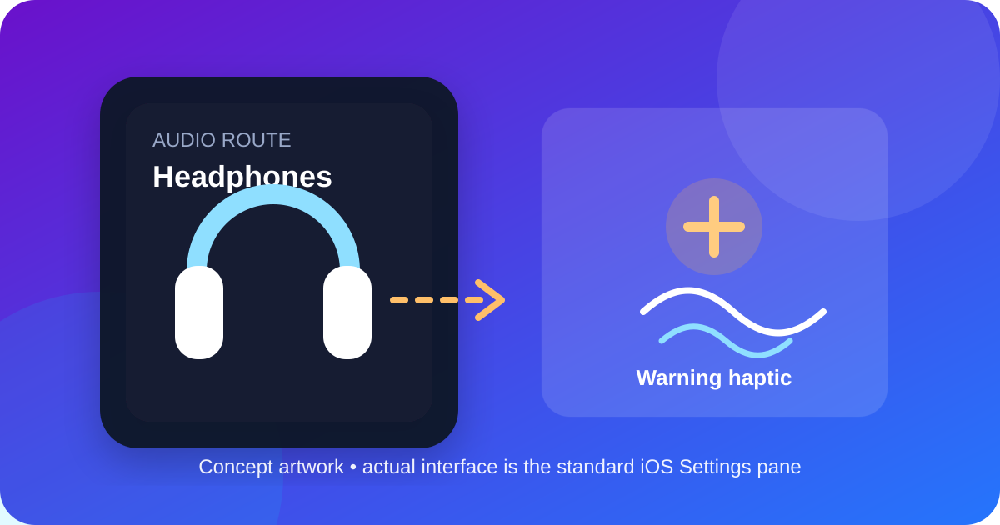
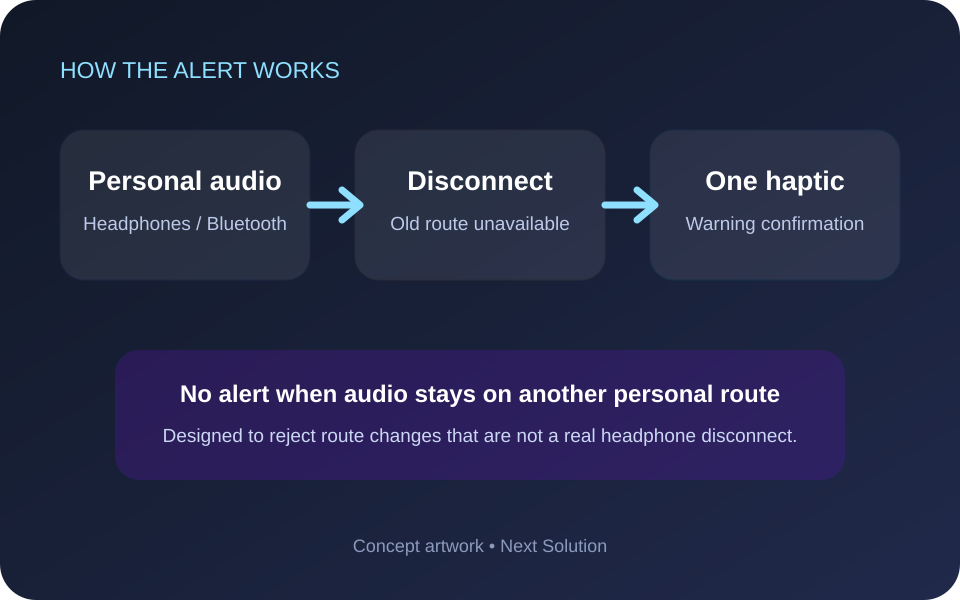
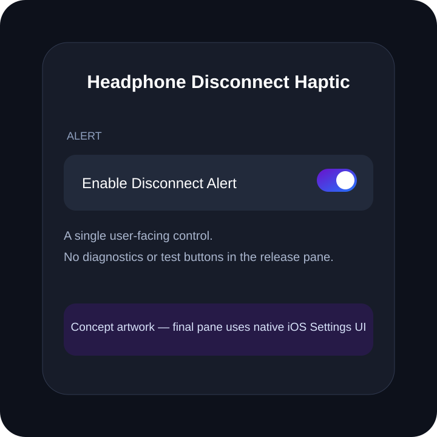

Disconnect haptic
One warning haptic gives immediate physical confirmation that your headphones are no longer the active personal-audio route.
Version 1.0.0. Feel one warning haptic when wired or Bluetooth personal audio disconnects and iOS falls away from that personal audio route.
Requires a jailbroken device. Compatibility depends on device, iOS version and jailbreak environment. Artwork on this page is conceptual, not a device screenshot.

The tweak listens for the system audio-route change notification. It reacts only when the old route contained wired or Bluetooth personal audio, the reason indicates that route became unavailable, and the current route no longer contains personal audio.
One warning haptic gives immediate physical confirmation that your headphones are no longer the active personal-audio route.
Ordinary route changes are rejected when the previous route was not personal audio or the current route is still personal audio.
The release pane contains one real control: Enable Disconnect Alert. There are no diagnostics or test buttons.
These diagrams explain the behavior. They are concept artwork and may differ visually from the native iOS interface.


| Package | Architecture | Use when |
|---|---|---|
| RootHide | iphoneos-arm64e | Your jailbreak uses the RootHide environment. |
| Rootless | iphoneos-arm64 | Your jailbreak uses a standard rootless environment. |
Minimum supported version: iOS 15.0. Dependencies: MobileSubstrate-compatible injection and PreferenceLoader. A native Settings pane is included; there is no separate app.
The filenames below match the published Sileo index for package com.nextsolution.headphonedisconnecthaptic.
com.nextsolution.headphonedisconnecthaptic, and respring. The tweak does not modify saved audio, Bluetooth, contact, message or credential data.The packages are build-validated, but matching-device runtime behavior still requires physical testing. The main remaining assumption is that SpringBoard receives the documented audio-route notification consistently in the target iOS 16.0 RootHide environment.
Confirm the tweak is enabled, the correct package variant is installed, and the device really transitioned away from wired/Bluetooth personal audio.
Refresh Sileo dependencies, confirm PreferenceLoader is installed, then respring.
Open Sileo in safe mode, uninstall the package, and respring. Do not install RootHide and rootless variants together.
No. It is a jailbreak tweak and requires compatible tweak injection.
Install HeadphoneDisconnectHaptic_1.0.0_RootHide.deb, architecture iphoneos-arm64e.
Install HeadphoneDisconnectHaptic_1.0.0_Rootless.deb, architecture iphoneos-arm64.
The package targets iOS 15.0 and later, with iOS 16.0 as the primary testing target.
Yes after installation or removal. Preference changes are delivered using a Darwin notification and normally do not require another respring.
No. Its feature decision uses audio-route type and route-change reason, and it does not extract messages, credentials, contacts or payment data.
Uninstall Headphone Disconnect Haptic from Sileo and respring.
Use the Next Solution website or YouTube community and include your iOS version, jailbreak type and package variant.